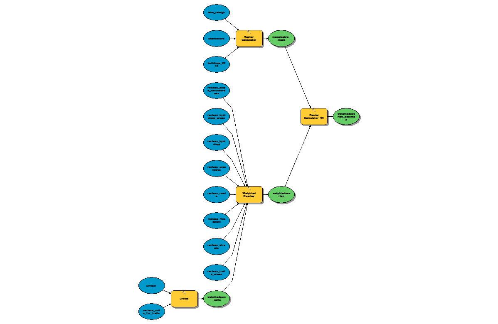
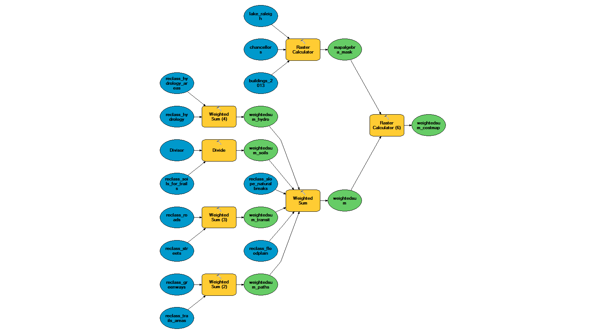

Trail planning seminar
Seminar topics
r.walk function & parameters, walking parameters, mountain biking parameters, trailheads and scenic spots, viewsheds and viewpoints, existing informal trails, the masterplan, scenarios, preferences, tradeoffs, and map overlay logic models
Walking
Walking function
Naismith's Rule with Langmuir's Corrections
implemented asr.walk in GRASS GIS
T = [(a)*(Delta S)] + [(b)*(Delta H uphill)] + [(c)*(Delta H moderate downhill)] + [(d)*(Delta H steep downhill)] T = time of movement in seconds Delta S = distance covered in meters Delta H = altitude difference in meters Default walking coefficients (in meters/second) a = 1 / walking speed (1.3889 m/s) = 0.72 m/s b = 1 / uphill walking speed (0.1667 m/s) = 6.0 m/s c = 1 / moderate downhill walking speed (0.5 m/s) = 1.9998 m/s d = 1 / steep downhill walking speed (-0.5 m/s) = -1.9998 m/s
Slope factor
The slope factor is the break value between the moderate and steep downhill slope
The default slope factor is -0.2125 or tan(-12) for a break value at 12 degrees or an 21.3% slope

Walking velocity vs. slope angle, source: Wikimedia Commons
Cycling
Mountain biking parameters
Mountain biking parameters
Mountain Biking Trail Standards
Beginners | Green Circle
Green standards
- maximum sustained grade: 10% (~5.71 degrees)
- short pitch max grade while climbing: 15% (~8.55 degrees) for <200'
- short pitch max grade while descending: 35% (~19.33 degrees) for <100'
- max pitch density: 5-20% of trail
Green slope factor
10% slope or 5.71 degrees
tan(-5.71 degrees)=-0.0999
Green coefficients
(in meters/second)
a = 1 / cycling speed (7.5mph or 3.3528 m/s) = 0.2983 m/s b = 1 / uphill cycling speed (5mph or 2.2352 m/s) = 0.4474 m/s c = 1 / moderate downhill cycling speed (15mph or 6.7056) = 0.1491 m/s d = 1 / steep downhill cycling speed (5mph or 2.2352 m/s) = 0.4474 m/s
Intermediate | Blue Square
Blue standards
- maximum sustained grade: 15% (~8.55 degrees)
- short pitch max grade while climbing: 20% (~11.31 degrees) for <200'
- short pitch max grade while descending: 70% (35 degrees) for <100'
- max pitch density: 10-30% of trail
Blue slope factor
15% slope or 8.55 degrees
tan(-8.55 degrees)=-0.1503
Blue coefficients
(in meters/second)
a = 1 / cycling speed (10mph or 4.4704 m/s) = 0.2237 m/s b = 1 / uphill cycling speed (7.5mph or 3.3528 m/s) = 0.2983 m/s c = 1 / moderate downhill cycling speed (17.5mph or 7.8232 m/s) = 0.1278 m/s d = 1 / steep downhill cycling speed (7.5mph or 3.3528 m/s) = 0.2983 m/s
Expert | Black Diamond
Black standards
- maximum sustained grade: 20% (~11.31 degrees)
- short pitch max grade while climbing: 30% (~16.75 degrees) for <200'
- short pitch max grade while descending: 100% (45 degrees) for <100'
- max pitch density: 20-40% of trail
Black slope factor
20% slope or 11.31 degrees
tan(-11.31 degrees)=-0.2
Black coefficients
(in meters/second)
a = 1 / cycling speed (15mph or 6.7056 m/s) = 0.1491 m/s b = 1 / uphill cycling speed (10mph or 4.4704 m/s) = 0.2237 m/s c = 1 / moderate downhill cycling speed (20mph or 8.9408 m/s) = 0.1118 m/s d = 1 / steep downhill cycling speed (17.5mph or 7.8232 m/s) = 0.1278 m/s
Scenarios
Trail types
- accessible walking trail
- boardwalk
- hiking trail
- easy mountain biking trails
- moderate mountain biking trails
Potential scenarios
- combined accessible walking trail / boardwalk
- combined accessible walking trail / boardwalk + mountain biking trails
- hiking trails
- combined hiking / biking trails
- hiking trails + mountain biking trails
- combined hiking trails / boardwalk + mountain biking trails
Preferences
Discuss tradeoffs...
Logic models
Weighted overlay

Weights

Weighted sum

Team assignment
- Digitize trailheads and scenic spots
in GRASS: create a new mapset in the ncspf location and add points
in ArcGIS: add points to the trails geodatabase
- Prepare a presentation outlining the scenarios your team will address. Explain your scenario objectives and preferences, your map overlay logic model and weights, and your walking and biking parameters.
create in google docs and share with the instructors
- Prepare supplies for the first charrette
- 12" or 18" tracing paper
- 24" or 36" tracing paper
- markers
- pens
- scales
- masking tape
- an aerial photograph of your site
- a contour map of your site